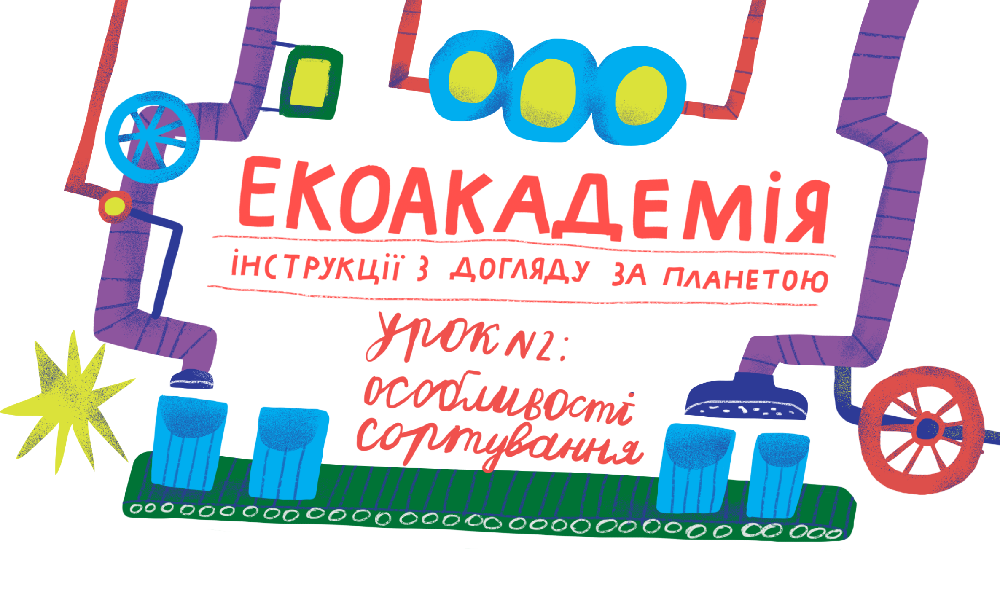

<link href="https://fonts.googleapis.com/css2?family=Montserrat+Alternates:ital,wght@0,100;0,200;0,300;0,400;0,500;0,600;0,700;0,800;0,900;1,100;1,200;1,300;1,400;1,500;1,600;1,700;1,800;1,900&display=swap" rel="stylesheet">
<link rel="stylesheet" href="./css/second-start-section.css">
<section class="start-section">
    <header class="header">
        <div class="header-logo">
            
        </div>
        <nav class="header-menu">
            <div class="header-menu-items-finished">
                <li class="second-header-menu-item"><a href="">Урок 1</a></li>
                <li class="second-header-menu-item active"><a href="">Урок 2</a></li>
            </div>
            <li class="second-header-menu-item transparent"><a href="">Урок 3</a></li>
            <li class="second-header-menu-item transparent"><a href="">Урок 4</a></li>
            <li class="second-header-menu-item transparent"><a href="">Урок 5</a></li>
            <li class="second-header-menu-item transparent"><a href="">Екоекзамен</a></li>
            <li class="second-header-menu-item main"><a href="">Головна</a></li>
        </nav>
    </header>
    <main class="second-start__content">
        <h1 class="second-start__content-title">Особливості сортування</h1>
        <div class="start__content-wrapper">
            
            <div class="start__content-text">
                <p class="start__content-paragraph">
                    Сміттєзвалище чи нове життя? Деякі відходи зовсім навіть і не відходи, а матеріал для повторного використання. Скло, метал, певні види пластику та папір можуть отримати друге, а то і третє життя після переробки. Але спочатку все це потрібно відсортувати.
                </p>
                <p class="start__content-paragraph">
                    Павучиха Поля разом з Черв’яком Леонідом покажуть на власному прикладі, що сортування та компостування — це легко.
                </p>
            </div>
        </div>
    </main>
    <footer class="start__footer">
        <div class="start__footer-block">
            <p class="start__footer-block-text">Екодруг</p>
            
        </div>
    </footer>
</section>